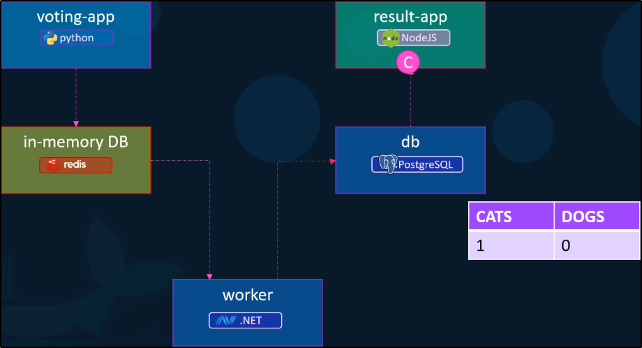

Possiamo rendere il tutto più facile:
Basta usare i file YAML e creiamo un oggetto in YAML.
Poi possiamo chiamare il file e fare "up" per far partire tutta la stack.
Questo ne aumenta la manutenzione in senso positivo!
NB: Questo vale solo per i Container per quel Docker Host!

Ecco l'applicazione di esempio:

Ora possiamo runnare le app ed usare l'opzione "--link " per collegare il Container runnato
con altri container già esistenti!

Possiamo istruire nel costruire uno stack con "build" se abbiano le immagini o le cose
che ci servono già in locale (o sono presenti solo in locale)

Possiamo vedere differenti versioni di Docker Compose:
1) La prima dava problemi se volevi deployare in rete differenti dalla Bridged Network.
Non vi è nessuna parte dove specificare la rete.
Inoltre, se vi sono dipendenze non sono specificabili
(E.G. non puoi specificare che aspetti prima il DB e poi puoi eseguire la Web App!)
2) Semplicemente viene creato un tag chiamato "services" e va tutto quello che avresti messo
nella versione 1 del file.
Inoltre, deve essere specificato il tag "version".
Nella versione precedente i Container venivano attaccati alla Bridged Network e connessi
tramite i --link.
Ora nella versione 2 crea una Dedicated Network per i Container.
Inoltre è possibile comunicare usando i Service Names.
Possiamo perfino aggiungere il "depends_on" per indicare da quale container dipende.

Parliamo di Network in Docker.
Ci basta aggiungere le reti che abbiamo e dire chi necessita di quale rete.